瓷砖贴图处理和上传
一、找到瓷砖贴图格式为 JPG 尺寸为800*800mm
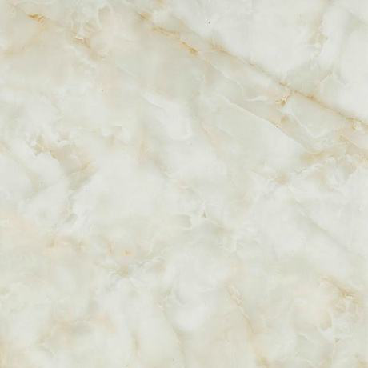二、放入到adobe photoshop做相应的处理
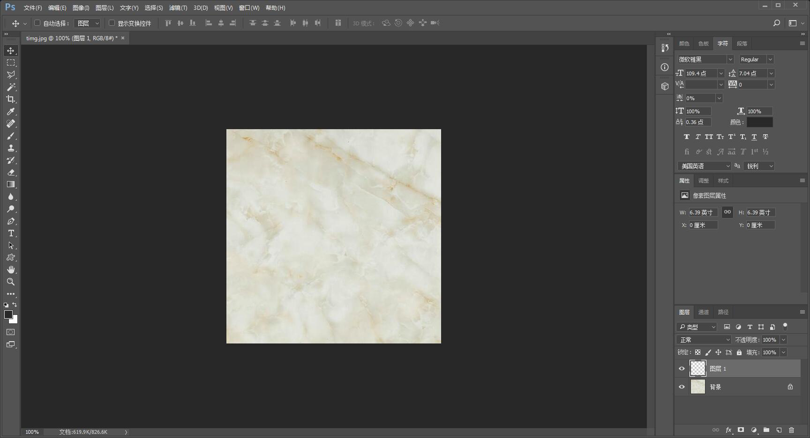三、查看瓷砖尺寸
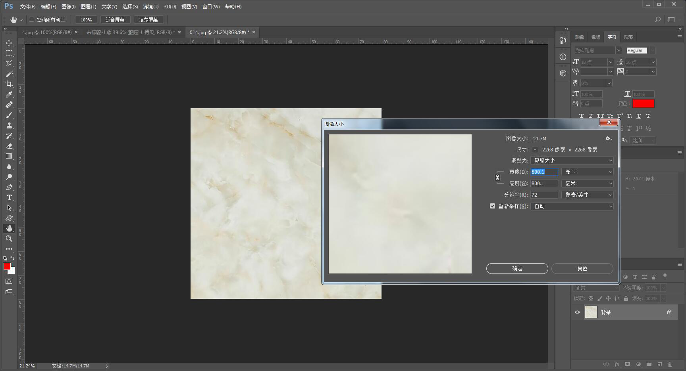查看或修改瓷砖贴图像素（不超过3M,分辨率不大于1024*1024）
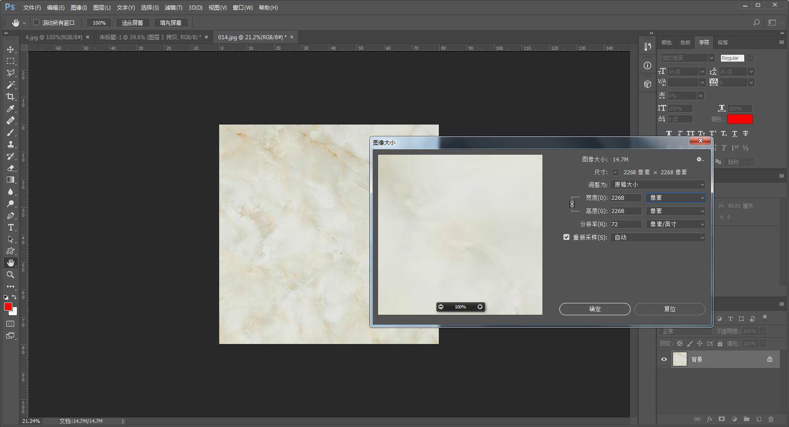 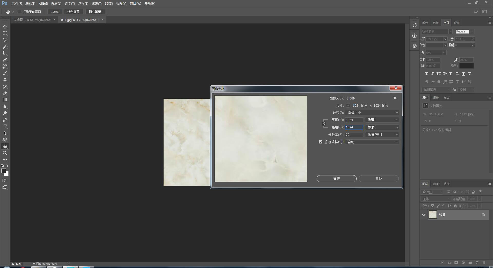四、修改完成后，增加瓷砖缝迹
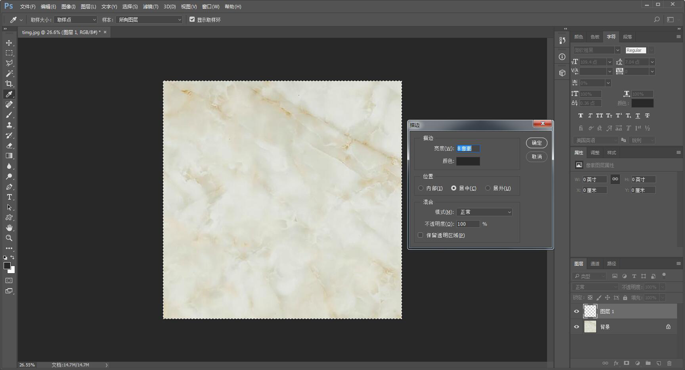五、修改完成后（如下图）
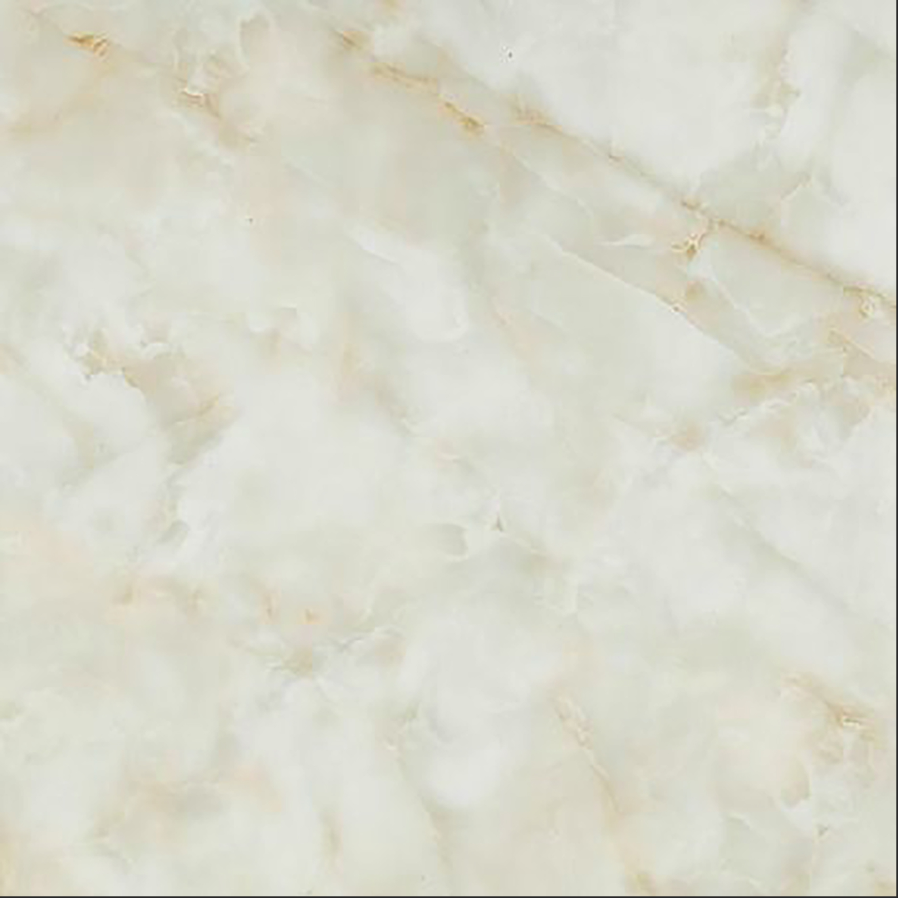六、后台上传
找到模型/素材库——选择素材库——抛釉砖
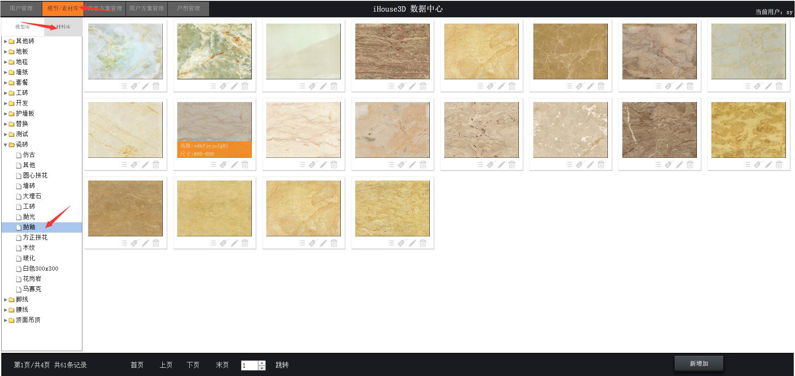点击新增加贴图按钮/弹出上传贴图文件窗口
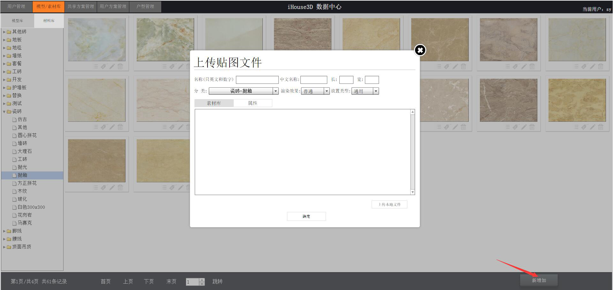 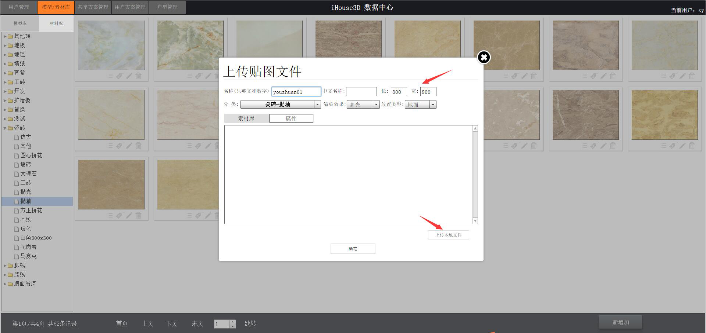输入前端贴图显示名称和中文名称，再输入瓷砖尺寸（毫米）， 然后选择放置类型和渲染效果，再点击上传贴图
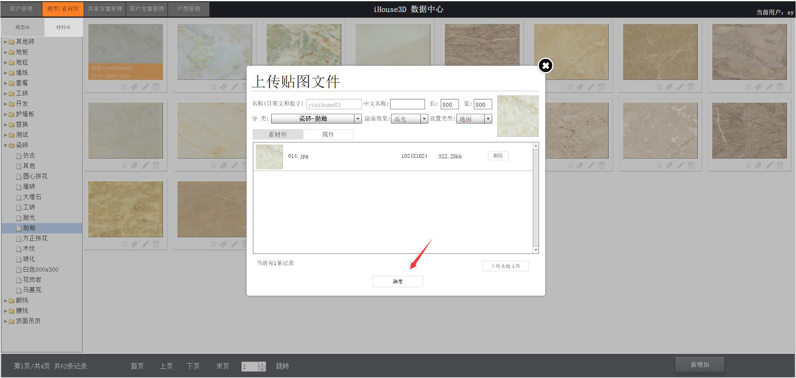上传完成后可以看到贴图显示在列表
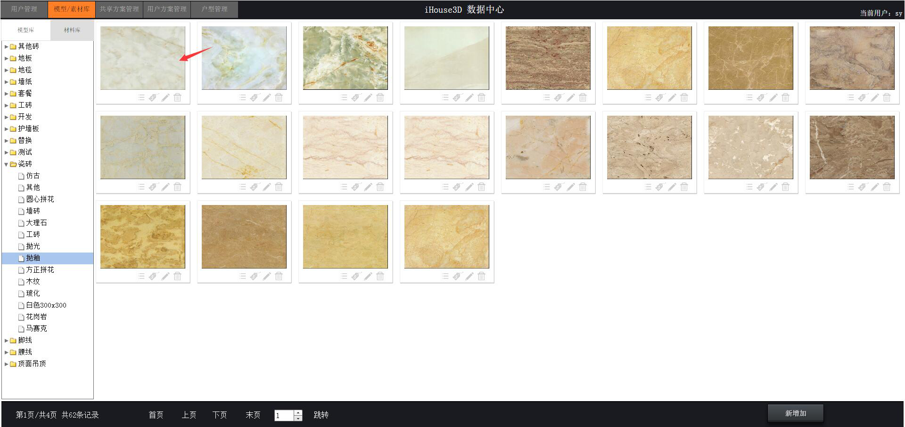七、前端系统登录查看
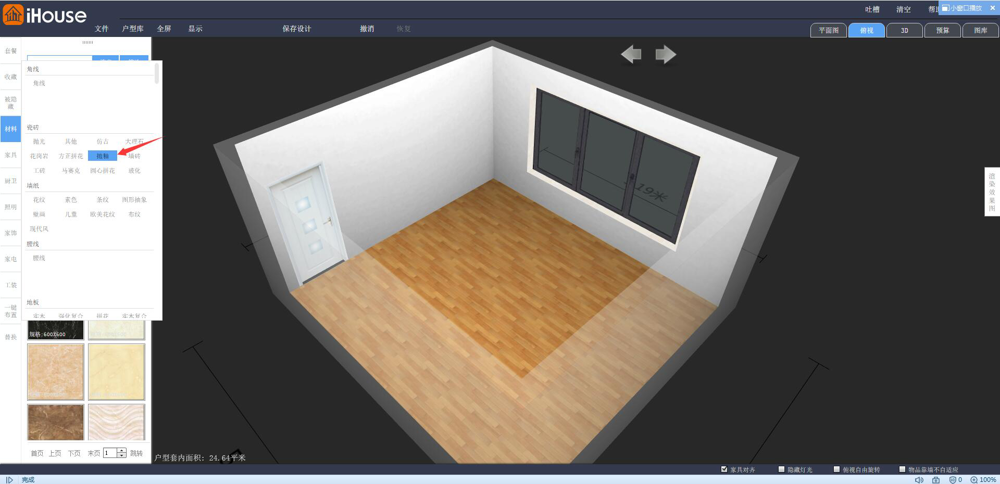 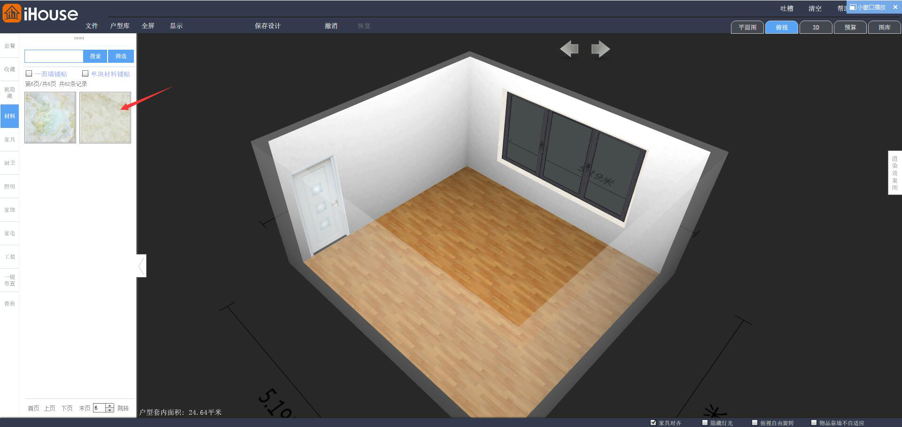 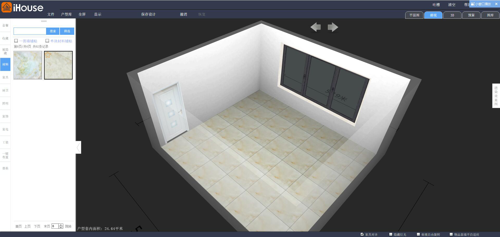 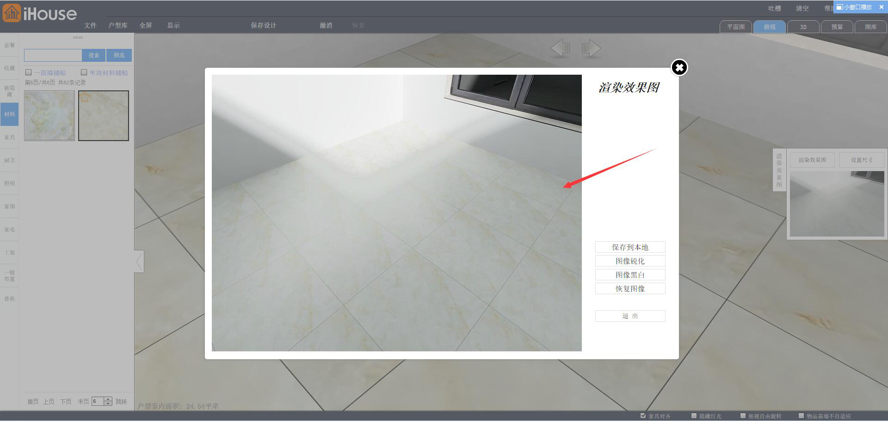